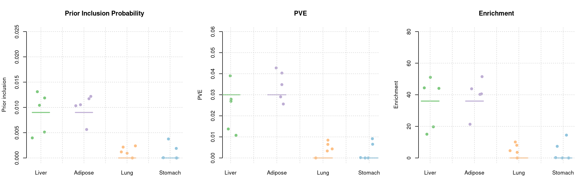
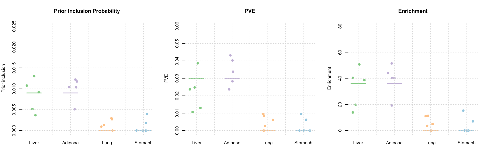
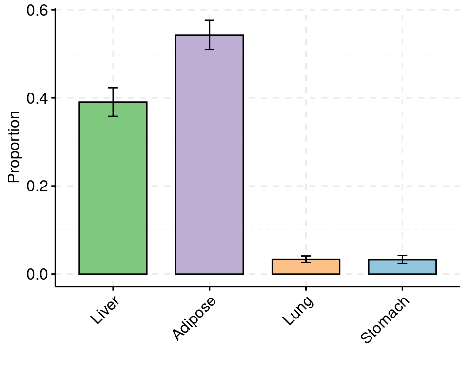
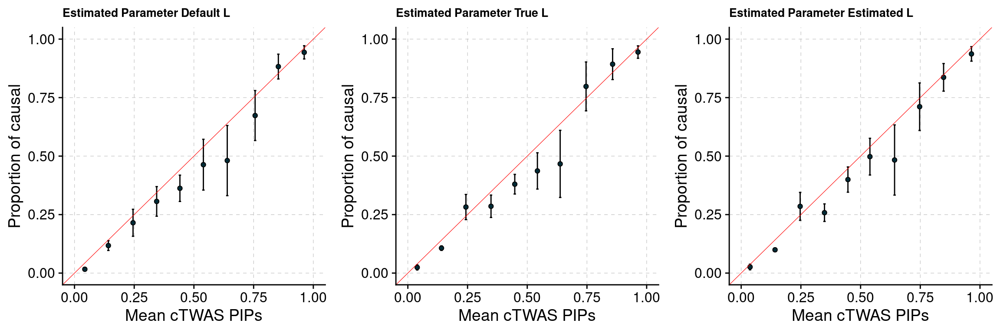

Four expression traits simulation
shengqian
2024-5-6
Last updated: 2024-06-03
Checks: 6 1
Knit directory: multigroup_ctwas_analysis/
This reproducible R Markdown analysis was created with workflowr (version 1.7.0). The Checks tab describes the reproducibility checks that were applied when the results were created. The Past versions tab lists the development history.
The R Markdown file has unstaged changes. To know which version of the R Markdown file created these results, you’ll want to first commit it to the Git repo. If you’re still working on the analysis, you can ignore this warning. When you’re finished, you can run wflow_publish to commit the R Markdown file and build the HTML.
Great job! The global environment was empty. Objects defined in the global environment can affect the analysis in your R Markdown file in unknown ways. For reproduciblity it’s best to always run the code in an empty environment.
The command set.seed(20231112) was run prior to running the code in the R Markdown file. Setting a seed ensures that any results that rely on randomness, e.g. subsampling or permutations, are reproducible.
Great job! Recording the operating system, R version, and package versions is critical for reproducibility.
Nice! There were no cached chunks for this analysis, so you can be confident that you successfully produced the results during this run.
Great job! Using relative paths to the files within your workflowr project makes it easier to run your code on other machines.
Great! You are using Git for version control. Tracking code development and connecting the code version to the results is critical for reproducibility.
The results in this page were generated with repository version 92a42fe. See the Past versions tab to see a history of the changes made to the R Markdown and HTML files.
Note that you need to be careful to ensure that all relevant files for the analysis have been committed to Git prior to generating the results (you can use wflow_publish or wflow_git_commit). workflowr only checks the R Markdown file, but you know if there are other scripts or data files that it depends on. Below is the status of the Git repository when the results were generated:
Unstaged changes:
Modified: analysis/four_expression_traits_simulations.Rmd
Note that any generated files, e.g. HTML, png, CSS, etc., are not included in this status report because it is ok for generated content to have uncommitted changes.
These are the previous versions of the repository in which changes were made to the R Markdown (analysis/four_expression_traits_simulations.Rmd) and HTML (docs/four_expression_traits_simulations.html) files. If you’ve configured a remote Git repository (see ?wflow_git_remote), click on the hyperlinks in the table below to view the files as they were in that past version.
| File | Version | Author | Date | Message |
|---|---|---|---|---|
| Rmd | 96c8290 | sq-96 | 2024-06-02 | update |
| html | 96c8290 | sq-96 | 2024-06-02 | update |
| Rmd | 3426089 | sq-96 | 2024-05-16 | update |
| html | 3426089 | sq-96 | 2024-05-16 | update |
| html | 6e35c53 | sq-96 | 2024-05-16 | update |
| Rmd | 63d9123 | sq-96 | 2024-05-16 | update |
| html | 63d9123 | sq-96 | 2024-05-16 | update |
| Rmd | 914e869 | sq-96 | 2024-05-16 | update |
| html | 914e869 | sq-96 | 2024-05-16 | update |
| Rmd | a0efc0d | sq-96 | 2024-05-16 | update |
| html | a0efc0d | sq-96 | 2024-05-16 | update |
| Rmd | 25b86f0 | sq-96 | 2024-05-13 | update |
| html | 25b86f0 | sq-96 | 2024-05-13 | update |
| Rmd | 86da557 | sq-96 | 2024-05-10 | update |
| html | 86da557 | sq-96 | 2024-05-10 | update |
| Rmd | 19c4b2c | sq-96 | 2024-05-09 | update |
| html | 19c4b2c | sq-96 | 2024-05-09 | update |
| Rmd | dc11252 | sq-96 | 2024-05-09 | update single tissue simulation |
This four expression traits simulation study is conducted to evaluate our new cTWAS software performance (parameter estimation, PIP calibration …). Four expression traits from PredictDB are used in this study, which are Liver, Adipose, Lung and stomach. Liver and Adipose are selected as causal tissues, each with 3% PVE and 0.9% prior. Lung and stomach are non-causal tissues with 0% PVE. Two types of LD between weight SNPs (calculating gene z score) are used and compared in this study. And their performance are very close because most genes only have one weight SNP.
Simulation 1: Expression trait in liver with 3% PVE and 0.9% Prior
Number of causal genes detected (GTEX LD)
simutag ctwas_genes ctwas_cgenes twas_genes twas_cgenes total_cgenes
1 1-1 14 12 189 33 140
2 1-2 32 27 331 56 180
3 1-3 34 27 260 37 156
4 1-4 8 6 207 27 126
5 1-5 35 27 350 40 154
ctwas_genes_combined ctwas_cgenes_combined total_cgenes_combined
1 25 24 139
2 43 36 178
3 44 35 156
4 14 11 126
5 45 37 154Number of causal genes detected (UKBB LD)
simutag ctwas_genes ctwas_cgenes twas_genes twas_cgenes total_cgenes
1 1-1 13 12 189 33 140
2 1-2 26 23 327 57 180
3 1-3 25 24 255 37 156
4 1-4 6 6 207 26 126
5 1-5 33 26 351 40 154
ctwas_genes_combined ctwas_cgenes_combined total_cgenes_combined
1 24 24 139
2 41 36 178
3 34 31 156
4 14 11 126
5 42 35 154Estimated Prior Inclusion Probability and PVE (GTEX LD)

Estimated Prior Inclusion Probability and PVE (UKBB LD)

PIP attribution among tissues (UKBBLD)

PIP Calibration Plot of expression traits - four settings (filter out cs index 0)

PIP Calibration Plot of gene level PIP - four settings (filter out cs index 0)

sessionInfo()R version 4.2.0 (2022-04-22)
Platform: x86_64-pc-linux-gnu (64-bit)
Running under: CentOS Linux 7 (Core)
Matrix products: default
BLAS/LAPACK: /software/openblas-0.3.13-el7-x86_64/lib/libopenblas_haswellp-r0.3.13.so
locale:
[1] LC_CTYPE=en_US.UTF-8 LC_NUMERIC=C
[3] LC_TIME=en_US.UTF-8 LC_COLLATE=en_US.UTF-8
[5] LC_MONETARY=en_US.UTF-8 LC_MESSAGES=en_US.UTF-8
[7] LC_PAPER=en_US.UTF-8 LC_NAME=C
[9] LC_ADDRESS=C LC_TELEPHONE=C
[11] LC_MEASUREMENT=en_US.UTF-8 LC_IDENTIFICATION=C
attached base packages:
[1] stats graphics grDevices utils datasets methods base
other attached packages:
[1] dplyr_1.1.4 plyr_1.8.7 plotrix_3.8-2 cowplot_1.1.1
[5] ggpubr_0.6.0 ggplot2_3.4.4 data.table_1.14.2 ctwas_0.2.1.9000
[9] workflowr_1.7.0
loaded via a namespace (and not attached):
[1] colorspace_2.0-3 ggsignif_0.6.3
[3] rjson_0.2.21 ellipsis_0.3.2
[5] rprojroot_2.0.3 XVector_0.36.0
[7] locuszoomr_0.3.0 GenomicRanges_1.48.0
[9] fs_1.5.2 rstudioapi_0.14
[11] farver_2.1.1 ggrepel_0.9.4
[13] bit64_4.0.5 AnnotationDbi_1.58.0
[15] fansi_1.0.3 xml2_1.3.3
[17] codetools_0.2-18 logging_0.10-108
[19] cachem_1.0.6 knitr_1.40
[21] jsonlite_1.8.8 Rsamtools_2.12.0
[23] broom_1.0.5 dbplyr_2.5.0
[25] png_0.1-7 compiler_4.2.0
[27] httr_1.4.4 backports_1.4.1
[29] Matrix_1.5-3 fastmap_1.1.0
[31] lazyeval_0.2.2 cli_3.6.1
[33] later_1.3.0 htmltools_0.5.3
[35] prettyunits_1.1.1 tools_4.2.0
[37] gtable_0.3.1 glue_1.6.2
[39] GenomeInfoDbData_1.2.8 rappdirs_0.3.3
[41] Rcpp_1.0.9 carData_3.0-5
[43] Biobase_2.56.0 jquerylib_0.1.4
[45] vctrs_0.6.4 Biostrings_2.64.0
[47] rtracklayer_1.56.0 xfun_0.32
[49] stringr_1.5.0 ps_1.7.1
[51] irlba_2.3.5 lifecycle_1.0.4
[53] restfulr_0.0.14 ensembldb_2.20.2
[55] rstatix_0.7.2 XML_3.99-0.14
[57] getPass_0.2-2 zlibbioc_1.42.0
[59] zoo_1.8-10 scales_1.2.1
[61] gggrid_0.2-0 hms_1.1.2
[63] promises_1.2.0.1 MatrixGenerics_1.8.0
[65] ProtGenerics_1.28.0 parallel_4.2.0
[67] SummarizedExperiment_1.26.1 AnnotationFilter_1.20.0
[69] LDlinkR_1.4.0 yaml_2.3.5
[71] curl_4.3.2 gridExtra_2.3
[73] memoise_2.0.1 sass_0.4.2
[75] biomaRt_2.52.0 stringi_1.7.8
[77] RSQLite_2.2.14 highr_0.9
[79] S4Vectors_0.34.0 BiocIO_1.6.0
[81] GenomicFeatures_1.48.3 BiocGenerics_0.42.0
[83] filelock_1.0.2 BiocParallel_1.30.3
[85] GenomeInfoDb_1.32.2 rlang_1.1.1
[87] pkgconfig_2.0.3 matrixStats_0.62.0
[89] bitops_1.0-7 evaluate_0.16
[91] lattice_0.20-45 purrr_1.0.2
[93] labeling_0.4.2 GenomicAlignments_1.32.0
[95] htmlwidgets_1.5.4 bit_4.0.4
[97] processx_3.7.0 tidyselect_1.2.1
[99] magrittr_2.0.3 R6_2.5.1
[101] IRanges_2.30.0 generics_0.1.3
[103] DelayedArray_0.22.0 DBI_1.1.3
[105] withr_2.5.0 pgenlibr_0.3.2
[107] pillar_1.9.0 whisker_0.4
[109] abind_1.4-5 mixsqp_0.3-48
[111] KEGGREST_1.36.2 RCurl_1.98-1.7
[113] tibble_3.2.1 car_3.1-1
[115] crayon_1.5.1 utf8_1.2.2
[117] BiocFileCache_2.4.0 plotly_4.10.0
[119] rmarkdown_2.16 progress_1.2.2
[121] grid_4.2.0 blob_1.2.3
[123] callr_3.7.2 git2r_0.30.1
[125] digest_0.6.29 tidyr_1.3.1
[127] httpuv_1.6.5 stats4_4.2.0
[129] munsell_0.5.0 viridisLite_0.4.1
[131] bslib_0.4.0